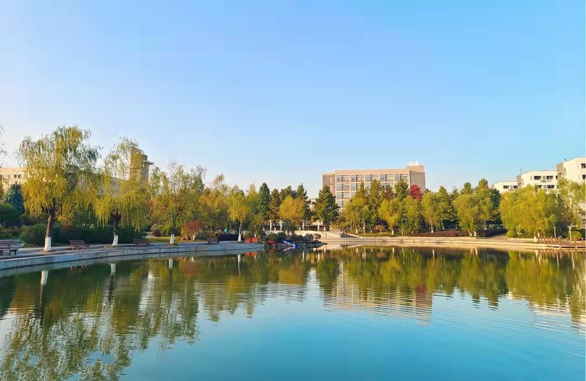

关于南京森林警察学院
 南京森林警察学院是长江以南唯一的公安部直属院校，濒江临海，交通便利，科教资源丰富，在我国公安高等教育布局中具有独特的地位和使命。学院设有治安学、侦查学、刑事科学技术、食品药品环境犯罪侦查技术、公安管理学、网络安全与执法、公安情报学、警务指挥与战术8个本科专业。其中，治安学（国家一流本科专业建设点）、网络安全与执法（国家一流本科专业建设点、江苏省品牌专业）、刑事科学技术（江苏省重点建设专业）和警务指挥与战术专业特警方向（公安高等教育重点专业培育点）四个优势专业。多年来，学院围绕服务生态环境、森林草原、打击破坏动植物资源犯罪等领域，在学科专业、人才培养、科技创新、技术服务等方面形成了鲜明特色。已形成公安技术、公安学、林学3个江苏省“十三五”重点建设学科、1个国家林业和草原局重点（培育）学科、2个校级重点建设学科等三类互为支撑、结构合理的学科布局。2017年被纳入江苏省2017-2023年硕士学位授予立项建设单位，目前已与北京林业大学、南京信息工程大学联合开展了硕士研究生培养工作。
更多学院优势
学院坚持政治建警、文化育警、素质强警，坚持“注重知识、能力、职业素质三结合”的人才培养原则，确保公安后备人才“对党忠诚、服务人民、执法公正、纪律严明”的政治本色和优良的专业素养。
近5年来，学院毕业生中共有500余人次在工作岗位上荣立三等功以上的各级奖励，3000余人次获得嘉奖或表彰。连续多年的毕业生跟踪调查情况显示，用人单位普遍认为学院毕业生“下得去、留得住、拉得出、用得上、打得赢”，政治立场坚定、专业知识过硬、实践技能突出。
学院现有教职工449人，其中，高级职称教师190人（其中正高级职称40人），博士、硕士学位351人，研究方向分布于法学、公安学、林学、药学、食品学、植物学、动物学等领域，在现有专业教师中法学、公安学、公安技术、管理学类占30%，食品、药品和环境相关专业教师10余名。
近年来，学院取得了一系列教学成果和科研成果：先后获得国家级教学成果二等奖3项、省（部）级教学成果特等奖1项、一等奖2项、二等奖5项、三等奖1项，省部级江苏省精品（优秀）课程8门，省部级精品教材7部，省部级品牌专业和特色专业各1个；先后承担国家自然科学基金委、国家“948”计划、公安部、教育部、司法部、国家林业局、江苏省教育厅、江苏省公安厅等厅局级以上项目119个，获得省部级科学技术进步奖5项、国家发明实用新型专利20项。多项科研成果通过鉴定，达到了国内领先水平，并在生产中得到了推广和应用。
学院高度重视国际学术交流，已与美国、俄罗斯、英国、加拿大、新西兰、瑞典、丹麦、澳大利亚、新加坡、越南等多个国家和我国台湾、香港地区的警务或森林消防同行建立了广泛的联系。
更多现任领导
张高文，男，汉族，1962年10月出生，内蒙古丰镇人，中共党员，大学学历，学士学位，教授，一级警监。1988年8月中国刑警学院刑侦专业毕业，同年分配到内蒙古丰镇市刑警大队工作。2010年12月任南京森林警察学院院长兼党委副书记（正司局级）。
{kind=link}
{kind=link}